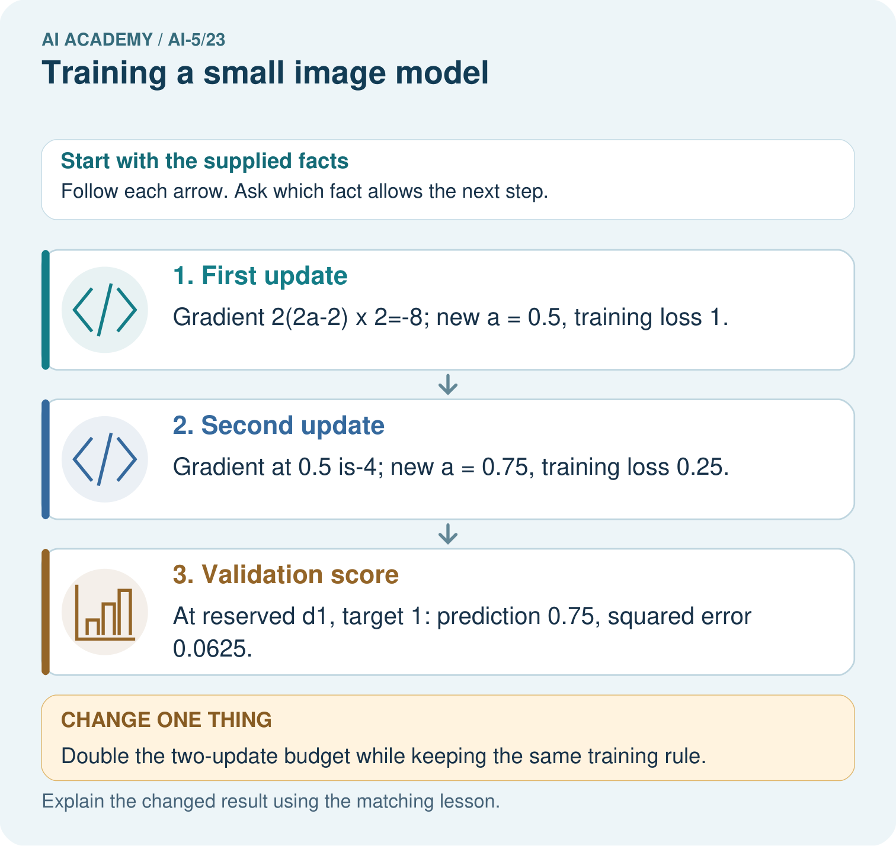
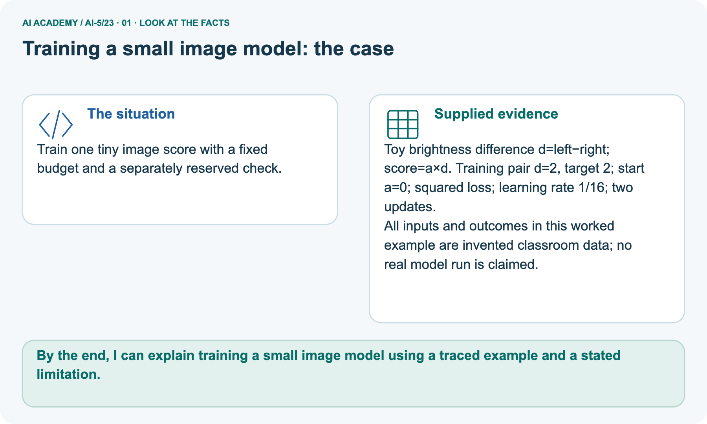
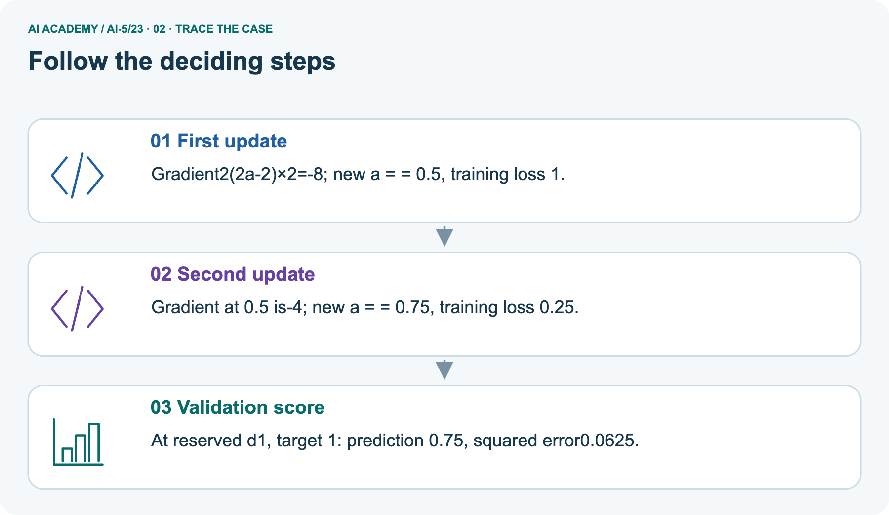
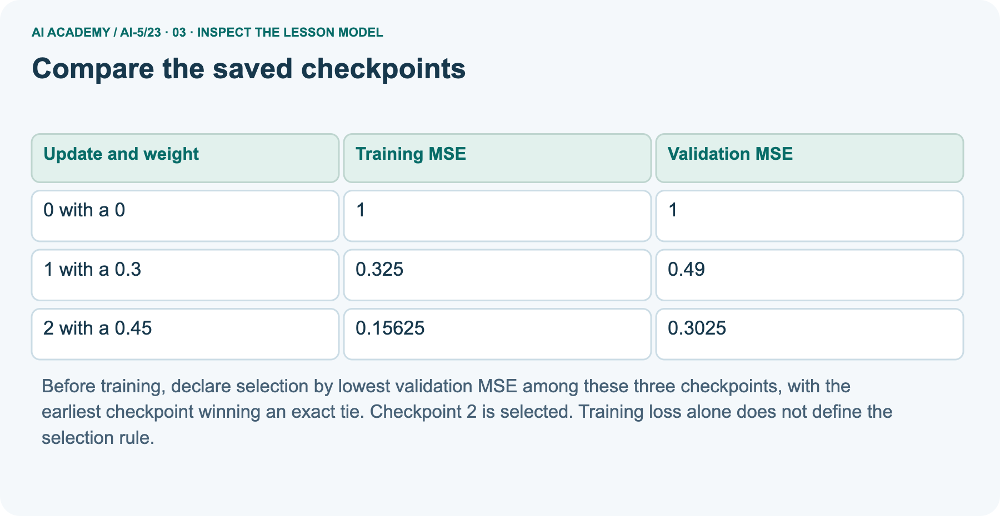
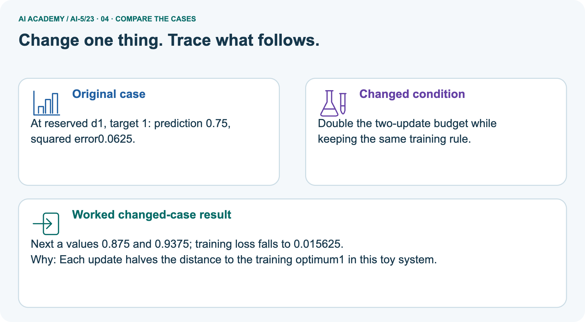
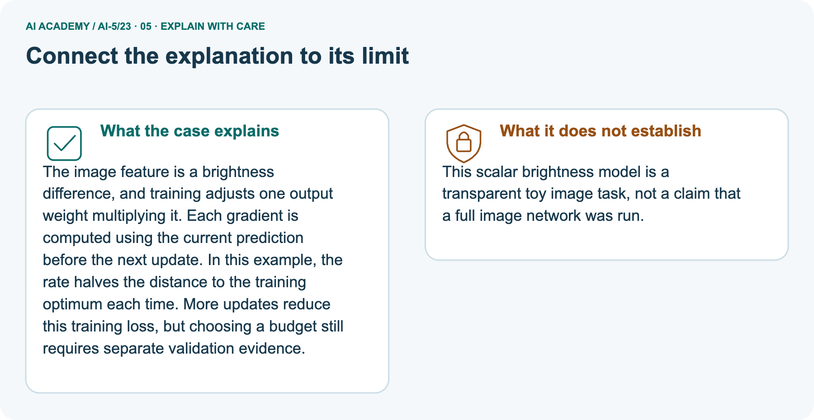

AI Academy · Level 5 · Grade 10 · Week 23 · Workbook
Training a small image model
Learn to understand, design, build, test and explain AI systems responsibly.
Project: Image-pattern Network Investigation
Workbook · 1 of 15
Recall and choose your starting point
Record your starting explanation for Training a small image model before opening notes. Show any later correction separately.
Try the recall before opening notes. Then use a different colour or a labelled second line to correct your explanation.
Pooling and spatial information
Without opening the old lesson, explain one key idea from Pooling and spatial information. Give an example and a mistake that the idea helps you avoid.
Image tensors and channels
Without opening the old lesson, explain one key idea from Image tensors and channels. Give an example and a mistake that the idea helps you avoid.
Initialisation and reproducibility
Without opening the old lesson, explain one key idea from Initialisation and reproducibility. Give an example and a mistake that the idea helps you avoid.
Workbook · 2 of 15
Practise with fading help
Complete the supported Training a small image model trace and record the first step you can explain without help.
Use W2: Check both updates for Training a small image model. Record the answer once; the lesson and workbook refer to the same attempt.
| Given inputs | Procedure I chose | Middle steps | Result and check |
|---|---|---|---|
Workbook · 3 of 15
Individual reasoning check
Check the proposed Training a small image model explanation against the supplied facts before discussing it.
Use the worked case for Training a small image model. Proposed explanation: “All parameters in a trained model must have been learned”. Decide whether this explanation is supported.
Point to the step or supplied fact that decides; explain your repair if needed.
Workbook · 4 of 15
Independent transfer case
Write one first attempt at the reserved independent case before feedback. Repeated copies of that case refer to the same recorded attempt.
Independent case: Choose a checkpoint independently
A separate model scores bd. Its training examples have d = 1 and -1 with signed targets 1 and -1. Start b = 0; gradient is 2(b - 1), rate 0.25 and budget two updates. Validation differences are 2 and -2 with targets 1 and -1.
Calculate all three weights and their validation MSEs, then select by lowest validation MSE.
Attempt this case before feedback. Record any help. Earlier examples below are further practice; a case already practised with feedback cannot establish fresh transfer.
Workbook · 5 of 15
W1 Trace features and a prediction
Trace features and a prediction. Apply the supplied Training a small image model facts and keep your reasoning.
For Train B, compute d, h1, h2 and the score at a = 0.45. Give the class prediction and squared error against its signed target.
Workbook · 6 of 15
W2 Check both updates
Check both updates. Apply the supplied Training a small image model facts and keep your reasoning.
Starting at a = 0, use gradient 5a - 3 and rate 0.1 for two updates. Give each gradient, new weight and training MSE.
Workbook · 7 of 15
W3 Apply the selection rule
Apply the selection rule. Apply the supplied Training a small image model facts and keep your reasoning.
Select among the three saved lesson checkpoints using validation MSE, with earliest update breaking a tie. Is selecting by training accuracy the same declared procedure?
Workbook · 8 of 15
W4 Choose a checkpoint independently
Attempt before feedback. If this repeats the selected independent case, reuse that first attempt; otherwise keep a separate record. Choose a checkpoint independently. Apply the supplied Training a small image model facts and keep your reasoning.
A separate model scores bd. Its training examples have d = 1 and -1 with signed targets 1 and -1. Start b = 0; gradient is 2(b - 1), rate 0.25 and budget two updates. Validation differences are 2 and -2 with targets 1 and -1.
Calculate all three weights and their validation MSEs, then select by lowest validation MSE.
Workbook · 9 of 15
W5 Audit a final evaluation
Audit a final evaluation. Apply the supplied Training a small image model facts and keep your reasoning.
After inspecting the final cases, a team changes the decision threshold and reports the best result as an unseen test score. Explain the problem and list two things the original report should preserve.
Workbook · 10 of 15
Project checkpoint and reflection
Connect Training a small image model to Image-pattern Network Investigation, identify a limit and choose the next useful test.
Add a labelled training a small image model evidence sheet to Image-pattern Network Investigation. Show how you can trace a complete image model with fixed features and one trained weight.
Use the supplied fictional case and keep its inputs, intermediate steps, calculation or prediction, and limitation. Connect this record to last week’s record; a matching answer without a trace is insufficient.
Workbook · 11 of 15
Feedback, return check and learning record
Record the first repaired step and a different case to revisit after a delay.
| Evidence | My record |
|---|---|
| Worked alone / hint / model | |
| First step I repaired and why | |
| New case checked later; date and result | |
| What I can now explain without notes | |
| One remaining question |
Revisit this idea with your teacher after a delay. Familiarity is different from explaining and using it on a changed case.
Workbook · 12 of 15
Pictorial case practice: Training a small image model
Train one tiny image score with a fixed budget and a separately reserved check. Explain the labelled step before checking the changed condition.
Train one tiny image score with a fixed budget and a separately reserved check.
Toy brightness difference d=left−right; score=a×d. Training pair d=2, target 2; start a=0; squared loss; learning rate 1/16; two updates.
All inputs and outcomes in this worked example are invented classroom data; no real model run is claimed.

Does lower training loss alone establish that four updates generalise better? Point to the relevant step in the picture, then write the changed result and the rule or evidence that supports it.
Record the help used
Support used: alone / hint / worked example. This record is practice evidence.
Project connection: For your Image-pattern Network Investigation, save the input, procedure, observed result and limitation of this check.
Label this worked example as practice; use a different, previously unreviewed case when checking independent understanding.
Workbook · 13 of 15
Project portfolio milestone
Keep this week’s input, deciding step, result and limit together in the Image-pattern Network Investigation record.
Project: Image-pattern Network Investigation
Current milestone: Evaluate and revise. Compare with your starting method, explain errors and record a justified revision.
For your Image-pattern Network Investigation, save the input, procedure, observed result and limitation of this check.
Label this worked example as practice; use a different, previously unreviewed case when checking independent understanding.
| Evidence to keep | My record |
|---|---|
| This week’s input and deciding step | |
| Prediction and actual result (or labelled paper trace) | |
| One change since the previous checkpoint and why | |
| One error or limit and the next test |
Workbook · 14 of 15
Supported practice and learning evidence
Try the supported questions before comparing with hints and feedback. Record what you repaired and the evidence you retained.
Use this supported practice once, in the browser or on paper. Keep the reserved independent assessment for a separate first attempt before teacher feedback.
Train one tiny image score with a fixed budget and a separately reserved check.
Practice 1: explain the deciding evidence
Which labelled step matches this detail? At reserved d1, target 1: prediction 0.75, squared error0.0625.
1. Validation score
2. First update
3. Second update
Hint · try first
Hint if needed: Read the steps in the pictorial case. Match the supplied detail to the stage that performs or records it.
Feedback · compare after trying
After your attempt, compare with the supported explanation: Validation score At reserved d1, target 1: prediction 0.75, squared error0.0625.
The image feature is a brightness difference, and training adjusts one output weight multiplying it. Each gradient is computed using the current prediction before the next update.
In this example, the rate halves the distance to the training optimum each time. More updates reduce this training loss, but choosing a budget still requires separate validation evidence.
Practice 2: explain the deciding evidence
Changed case · predict first
Changed-case practice: Double the two-update budget while keeping the same training rule. Which conclusion is supported by the supplied facts?
1. We can decide the result without examining the changed input or the procedure.
2. This one example guarantees correct results for every future input.
3. Next a values 0.875 and 0.9375; training loss falls to 0.015625.
Hint · try first
Hint if needed: Use the changed condition and the deciding step in the pictorial trace. The answer must say what follows from those facts.
Feedback · compare after trying
After your attempt, compare with the supported explanation: Next a values 0.875 and 0.9375; training loss falls to 0.015625. Each update halves the distance to the training optimum1 in this toy system.
Repair a missing building block
Review Pooling and spatial information (ai-5/22). Goal: Compute max and mean pooling under an explicit window rule. Short practice: Can the max map reveal where the 4 originally appeared?
Point to the relevant step in the picture, then write the changed result and the rule or evidence that supports it.. Return to this week and explain what you changed.
Review Image tensors and channels (ai-5/20). Goal: Read a pixel using declared row column and channel axes. Short practice: Where is the bottom green pixel in the first batched image?
Point to the relevant step in the picture, then write the changed result and the rule or evidence that supports it.. Return to this week and explain what you changed.
Review Initialisation and reproducibility (ai-5/17). Goal: Trace how starting values affect a fixed training budget. Short practice: Does the matching final loss mean the parameter values are equal?
Point to the relevant step in the picture, then write the changed result and the rule or evidence that supports it.. Return to this week and explain what you changed.
Predict, run and debug
The browser lab lets you edit the supported Python examples already included in this lesson. Predict first, run, inspect the actual output or error, change one input, then run again.
Keep code, predictions, actual results and a reasoned revision together. On paper, label your result as a trace rather than an execution.
Keep your completed work
Use Download completed work in the hosted lesson to export your answers, reflections, practice feedback and code-run evidence. Open the HTML copy to read or print it.
Drafts stay in this browser when storage is available; clear drafts on a shared device.
Workbook · 15 of 15
Visual concept journey
Explain each Training a small image model picture from its labels, then record a relevant limit.
01. Training a small image model: the case

Train one tiny image score with a fixed budget and a separately reserved check. Supplied facts: Toy brightness difference d=left−right; score=a×d.
Training pair d=2, target 2; start a=0; squared loss; learning rate 1/16; two updates. All inputs and outcomes in this worked example are invented classroom data; no real model run is claimed.
Point to the given fact that matters most. Explain why it matters.
02. Follow the deciding steps

First update: Gradient2(2a-2)×2=-8; new a = = 0.5, training loss 1. → Second update: Gradient at 0.5 is-4; new a = = 0.75, training loss 0.25. → Validation score: At reserved d1, target 1: prediction 0.75, squared error0.0625.
Point to each numbered stage and explain which recorded input it uses.
03. Compare the saved checkpoints

Compare the saved checkpoints. 0 with a 0 | 1 | 1. 1 with a 0.3 | 0.325 | 0.49. 2 with a 0.45 | 0.15625 | 0.3025
Read the labels and values. Explain the relationship the model shows.
04. Change one thing. Trace what follows.

Original case: At reserved d1, target 1: prediction 0.75, squared error0.0625. Changed condition: Double the two-update budget while keeping the same training rule.
Expected result: Next a values 0.875 and 0.9375; training loss falls to 0.015625. Reason: Each update halves the distance to the training optimum1 in this toy system.
Predict before checking the worked changed-case result. Name what changed and what the supplied facts allow you to conclude.
05. Connect the explanation to its limit

The image feature is a brightness difference, and training adjusts one output weight multiplying it. Each gradient is computed using the current prediction before the next update.
In this example, the rate halves the distance to the training optimum each time. More updates reduce this training loss, but choosing a budget still requires separate validation evidence.
Limit: This scalar brightness model is a transparent toy image task, not a claim that a full image network was run.
Explain the case, then point to a limit on the claim.
06. Make the idea visible in your project
![For your Image-pattern Network Investigation, save the input, procedure, observed result and limitation of this check. Label this worked example as practice; use a different, previously unreviewed case when checking independent understanding. Draw your input, deciding step, result and limit. Supported question: Does lower training loss alone establish that four updates generalise better? Point to the relevant step in the picture, then write the changed result and the rule or evidence that supports it.](../assets/academy-story-ai-5-23-06.png)
For your Image-pattern Network Investigation, save the input, procedure, observed result and limitation of this check.
Label this worked example as practice; use a different, previously unreviewed case when checking independent understanding. Draw your input, deciding step, result and limit.
Supported question: Does lower training loss alone establish that four updates generalise better? Point to the relevant step in the picture, then write the changed result and the rule or evidence that supports it.
Draw your project trace and justify the deciding step using evidence.